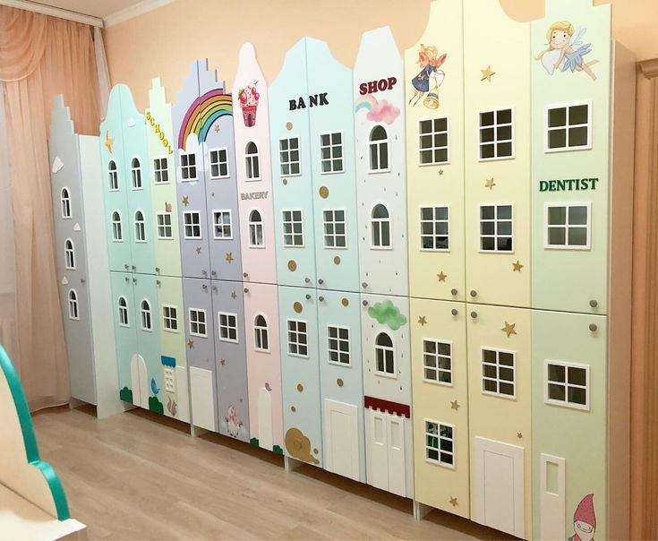
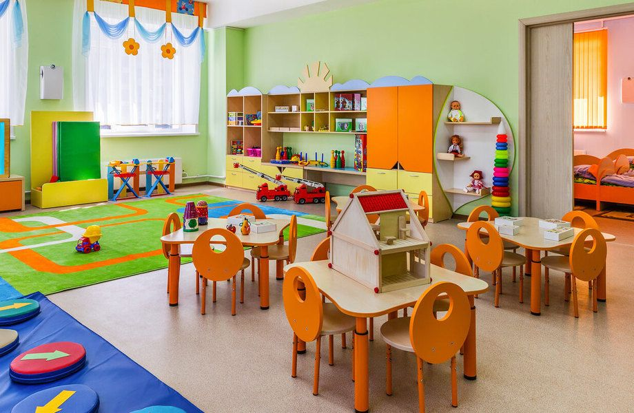
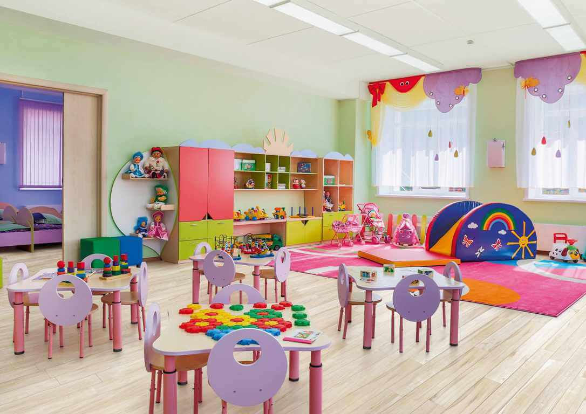
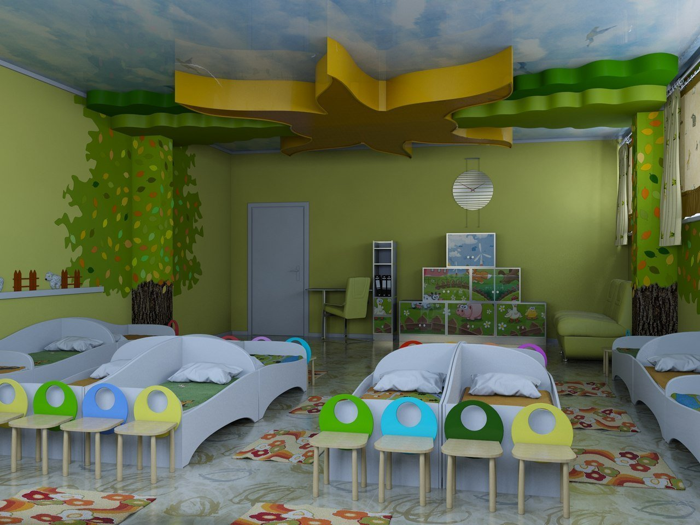
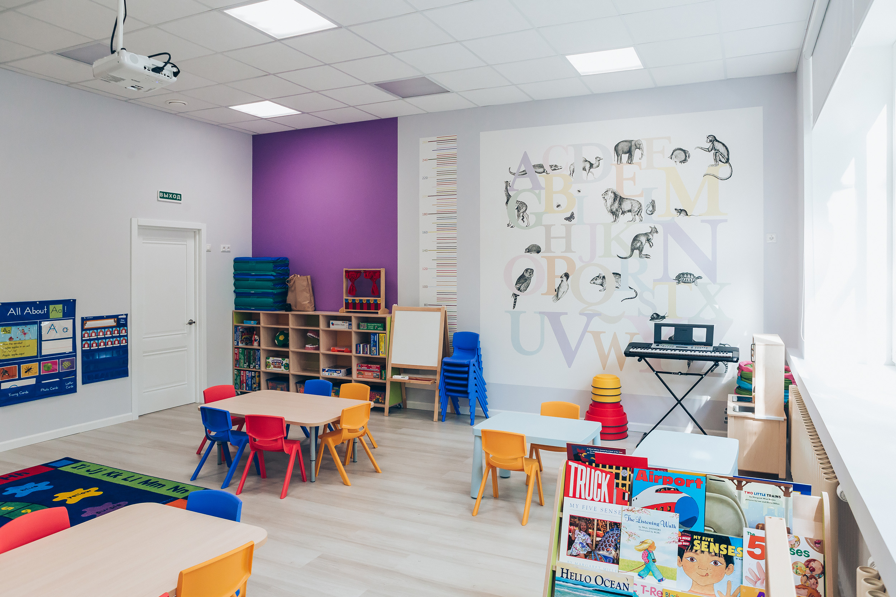
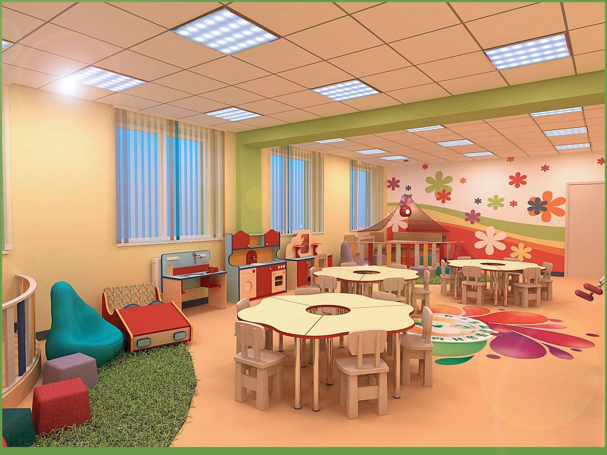
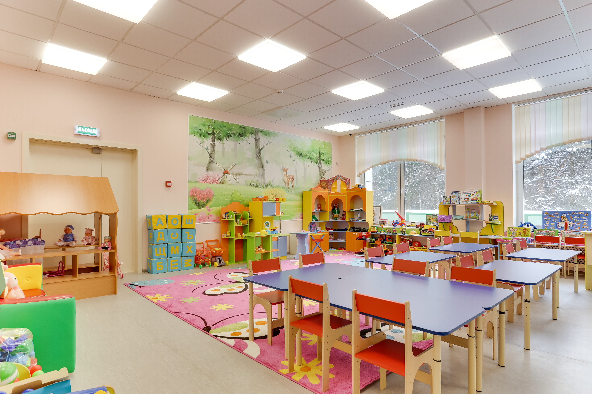
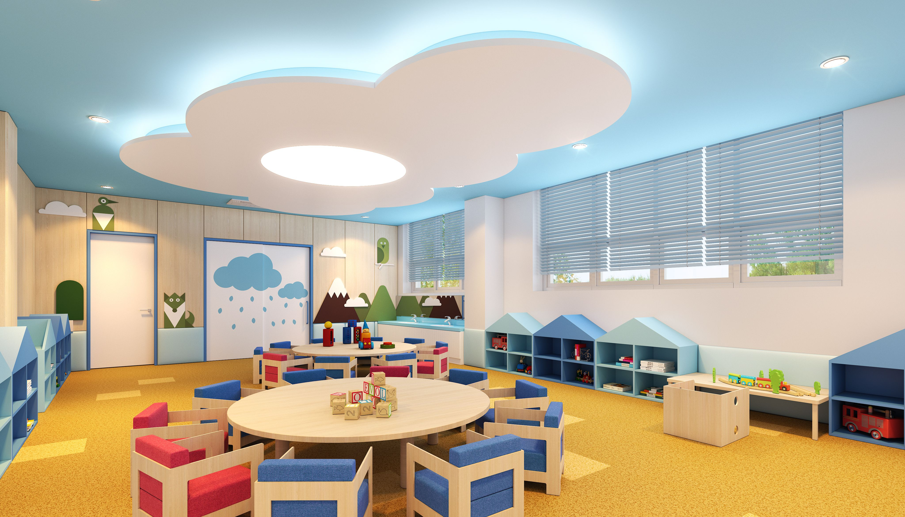

Жемчужинка
Это место станет вторым домом для вашего ребенка.
В нашем зале вас всегда встретят с приветливой улыбкой, здесь вы сможете расслабиться, выпить
чашечку чая, всегда получить необходимую информацию о занятиях, запланированных мероприятиях,
полюбоваться работами своих детей. Зайдя в просторную детскую раздевалку, вы окунетесь в
удивительный и сказочный мир детства.
У каждого ребенка есть свой индивидуальный шкафчик, который он может украшать на свое усмотрение.

Игровая комната – самая любимая комната детей; в нем беспрецедентное
количество разнообразных
игрушек, которые понравятся каждому ребенку. Есть все необходимые игровые наборы по интересам как
для мальчиков, так и для девочек: детская кухня, игровой набор «Маленький мастер», детский игровой
набор «Магазин», художественный уголок, а также развивающие игрушки для мелкой моторики,
дидактический стол. на котором ваш малыш будет заниматься с педагогом. И конечно же, в этом
волшебном мире игр и веселья мы отразили все краски радостей детства.


Из шумной и веселой игровой комнаты, всегда наполненной детским смехом, мы плавно переходим в
волшебное царство грез. В этой умиротворяющей атмосфере ваш малыш засыпает, слушая сказки любимого
учителя.

И конечно, это еще не все сюрпризы! Помимо игр и отдыха нас ждут
увлекательные и познавательные занятия с преподавателями.
Для этого есть специальный класс! Невероятно светлая комната,
выполненная в спокойных тонах, чтобы ничто не отвлекало вашего малыша от новых знаний и
интересных занятий! Здесь каждый ребенок может попробовать себя в роли художника, скульптора,
писателя, аппликатора и актера. Специально разработанный комплекс занятий обеспечит всестороннее
развитие вашего малыша.
У нас большое количество разнообразных комнат для занятий преподователей с детьми



